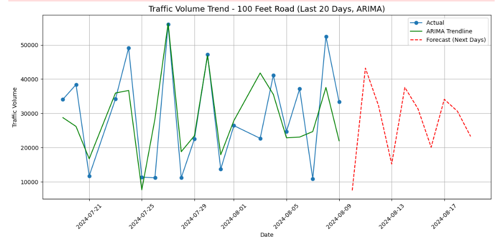
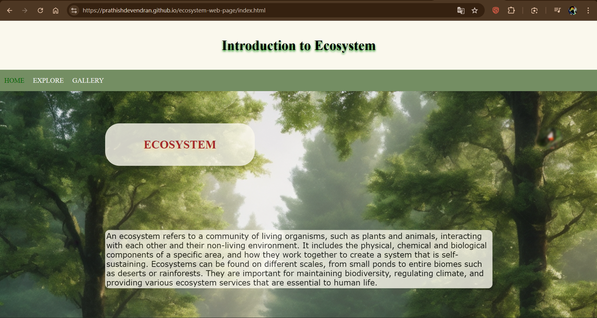

D PRATHISH
I am a Computer Science student at LPU. I specialize in Machine Learning, Android development, and Data Structures. I am passionate about creating innovative, high-fidelity solutions and continuously learning new technologies to build impactful, professional applications.
Listing of core proficiencies and platform competencies.
Explore my academic, training, and open-source software applications.

Traffic Volume Prediction
Targeted future traffic forecasting and congestion analysis across major Bangalore road networks for informed traffic planning.
Hospital Queue Management System
Built a real-time web-based application to replace manual queues with smart digital token management, optimizing waiting area flows.

Environmental Ecosystem Platform
Designed a responsive educational platform detailing core ecosystem concepts, environmental factors, food chains, and pollution effects.